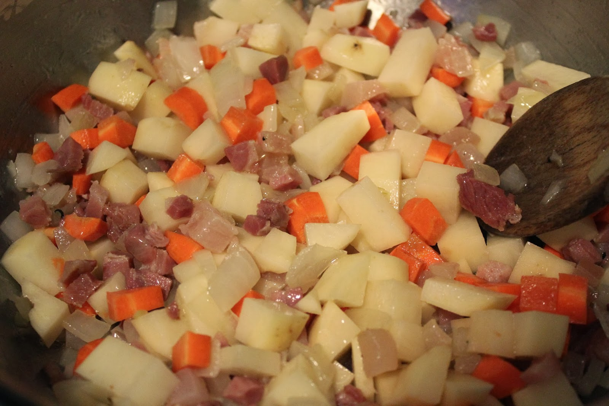

Step 2: Meanwhile, cook pancetta in large nonstick skillet over medium heat until crisp. Using slotted spoon, transfer pancetta to paper towels to drain. Pour off all but 1 teaspoon drippings from skillet. Add asparagus to drippings in skillet; saute 3 minutes. Add peas, white and pale green parts of green onions, and garlic; saute until vegetables are just tender, about 2 minutes. Remove from heat.
